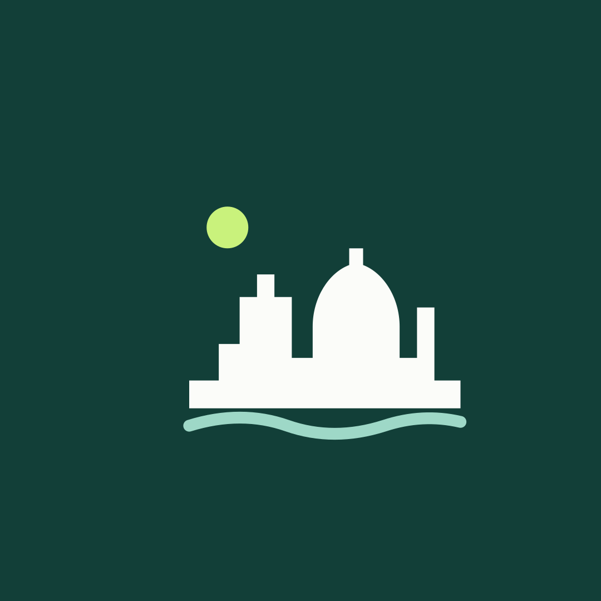

La paleta
Verde#123F38
Tinta#102E2A
Menta#DFF4EB
Lima#C9F27C
Crema#F7F5EE
Los logos
Las primeras piezas
Tipografía Geist, fondo crema, verde profundo y acentos lima. Un mensaje por pieza y una referencia gráfica al flujo de caja. Los PNG están preparados al tamaño indicado; revisa la vista previa al subirlos.

Perfil · 1080 × 1080
SVG · PNG
Editar y entregar
Instala Geist Regular y Geist Bold. Abre un original SVG en un editor vectorial que conserve texto, duplica la plantilla y guarda el editable junto al PNG final de cada campaña. Las exportaciones SVG llevan los textos en trazados para mostrarse correctamente sin fuentes instaladas.